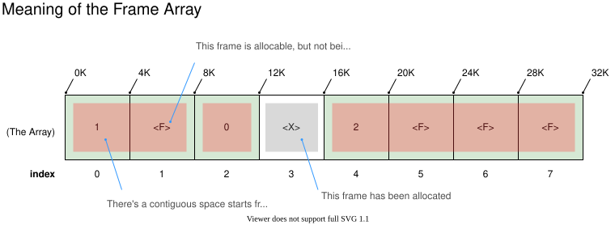
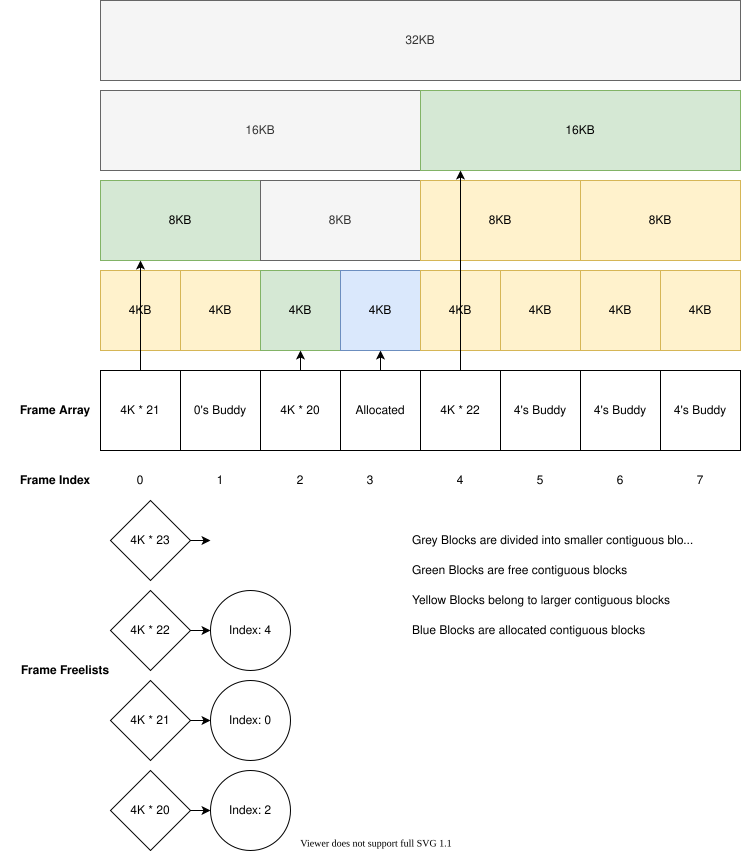

Lab 3: Memory Allocator#
Introduction#
A kernel allocates physical memory for maintaining its internal states and user programs’ use. Without memory allocators, you need to statically partition the physical memory into several memory pools for different objects. It’s sufficient for some systems that run known applications on known devices. Yet, general-purpose operating systems that run diverse applications on diverse devices determine the use and amount of physical memory at runtime. On OrangePi RV2, available physical memory and reserved regions are described by the Device Tree, so you must read those descriptions at boot.
In Lab 3, you need to implement memory allocators that rely on OrangePi RV2’s Device Tree for memory layout. They’ll be used in all later labs.
Goals of this lab#
Implement a Page Frame Allocator.
Implement a Dynamic Memory Allocator that requests pages from the previous Page Frame Allocator and partitions pages into chunk pools.
Implement a Startup Allocator (bump-pointer).
Background#
Reserved Memory#
After OrangePi RV2 is booted, some physical memory is already in use. For example:
Device Tree Blob (DTB)
Kernel image
Initramfs (ramdisk)
Any additional platform-specific reserved areas (e.g., spin tables, CLINT/PLIC buffers)
Your memory allocator should not allocate these memory blocks. Thus, you need to reserve these memory blocks before initializing any allocator.
Dynamic Memory Allocator#
Given the allocation size, a dynamic memory allocator needs to find a large enough contiguous memory block and return the pointer to it. Also, the memory block would be released after use. A dynamic memory allocator should be able to reuse the memory block for another memory allocation. Reserved or allocated memory should not be allocated again to prevent data corruption.
Page Frame Allocator#
You may be wondering why you are asked to implement another memory allocator for page frames. Isn’t a well-designed dynamic memory allocator enough for all dynamic memory allocation cases? Indeed, you don’t need it if you run applications in kernel space only.
However, if you need to run user space applications with virtual memory, you’ll need a lot of 4KB memory blocks with 4KB memory alignment called page frames. That’s because 4KB is the unit of virtual memory mapping. Regular dynamic memory allocators that store metadata (like size headers) within the memory block are unsuitable for managing page frames. Since page frames must be strictly 4KB-aligned, an inline header would shift the page boundary, forcing the allocator to waste significant space to maintain alignment.
Therefore, a better approach is representing available physical memory as page frames. The page frame allocator reserves and uses an additional page frame array to bookkeep the use of page frames. The page frame allocator should be able to allocate contiguous page frames for allocating large buffers. For fine-grained memory allocation, a dynamic memory allocator can allocate a page frame first then cut it into chunks.
Observability of Allocators#
It’s hard to observe the internal state of a memory allocator and hence hard to demo. To check the correctness of your allocator, you need to print the log of each allocation and free. Please refer to How to Demo? for more information.
Basic Exercises#
In the basic part, your allocator doesn’t need to deal with the reserved memory problem.
You can find an unused memory region (e.g. 0x1000_0000 - 0x2000_0000) and manage that part of memory only.
Note
In Advanced Exercise 2 - Reserved Memory - 10%, your allocator will transition to fully dynamic initialization.
You will be required to use the memory regions from the Device Tree’s <memory> node instead of hardcoding a region.
The major reason for hardcoding early on is that it saves you from handling the reserved memory problem right now.
If you dynamically managed the entire Device Tree memory space in your basic setup,
your allocator might accidentally allocate critical memory that is already in use by the system (e.g., 0x0000_0000 - 0x0007_ffff).
By picking a safe, hardcoded region, you ensure these reserved regions are avoided.
Basic Exercise 1 - Buddy System - 40%#
Buddy system is a well-known and simple algorithm for allocating contiguous memory blocks. It has an internal fragmentation problem, but it’s still suitable for page frame allocation because the problem can be reduced with the dynamic memory allocator. We provide one possible implementation in the following part. You can still design it yourself as long as you follow the specification of the buddy system.
Todo
Implement the buddy system for contiguous page frame allocation. Your maximum order must be larger than 5.
Note
You don’t need to handle the case of out-of-memory.
Hint
Implementing a generic circular doubly linked list may be very helpful in this lab and in future labs (Reference).
Data Structure#
The Frame Array (or “The Array”, so to speak)
The Array represents the allocation status of the memory by constructing a 1-1 relationship between the physical memory frame and The Array’s entries.
For example, if the size of the total allocable memory is 200 KiB with each frame being 4 KiB.
Then The Array would consist of 50 entries.
Use the base addresses from the <memory> regions to compute each frame’s physical address
(e.g., if the first region begins at 0x8000_0000, its first entry represents 0x8000_0000, next 0x8000_1000, etc.).
However, to describe a living Buddy system with The Array, we need to provide extra meaning to items in The Array by assigning values to them, defined as followed:
For each entry in The Array with index \(\text{idx}\) and value \(\text{val}\)
(Suppose the framesize to be 4kb)
if \(\text{val} \geq 0\):
There is an allocable, contiguous memory that starts from the \(\text{idx}\)’th frame with \(\text{size} = 2^{\text{val}}\) \(\times\)
4kb.if \(\text{val} = \text{<F>}\): (user-defined value)
The \(\text{idx}\)’th frame is free, but it belongs to a larger contiguous memory block. Hence, buddy system doesn’t directly allocate it.
if \(\text{val} = \text{<X>}\): (user-defined value)
The \(\text{idx}\)’th frame is already allocated, hence not allocable.

Below is the generalized view of The Frame Array:

You can calculate the address and the size of the contiguous block by the following formula.
\(\text{block's physical address} = \text{block's index} \times 4096 + \text{base address}\)
\(\text{block's size} = 4096 \times 2^\text{block's exponent}\)
Linked-lists for free blocks with different size (Free List)#
You can set a maximum contiguous block size and create one linked-list for each size. The linked-list links free blocks of the same size. The buddy allocator’s search starts from the specified block size list. If the list is empty, it tries to find a larger block in a larger block list.
Release redundant memory block#
The above algorithm may allocate one block far larger than the required size. The allocator should cut off the bottom half of the block and put it back to the buddy system until the size equals the required size.
Note
You should print the log of releasing redundant memory block for the demo
Free and Coalesce Blocks#
To allow the buddy system to reconstruct larger contiguous memory blocks, when the user frees an allocated block, the buddy allocator should not naively place it back on the free list. It should try to Find the buddy and Merge iteratively.
Find the buddy#
You can use the block’s index XORed with its size in pages (i.e., 1 << exponent) to find its buddy.
If its buddy is in the page frame array, then you can merge them into a larger block.
Merge iteratively#
There is still a possible buddy for the merged block. You should use the same way to find the buddy of the merged block. When you can’t find the buddy of the merged block or the merged block size is maximum-block-size, the allocator stops and puts the merged block onto the free list.
Note
You should print the log of merge iteration for the demo.
Basic Exercise 2 - Dynamic Memory Allocator - 30%#
Your Page Frame Allocator (from Basic Exercise 1) provides 4 KB-aligned page frames. The Dynamic Memory Allocator must request page frames from the Page Frame Allocator and use their physical base address. For small allocations (< 4 KB), you may maintain multiple chunk pools (sizes 16, 32, 48, 96 bytes, etc.), partitioning each page into fixed-size chunks for the corresponding pool.
On each allocation request:
Round up the requested size to the nearest pool size.
If a free chunk exists in the corresponding pool, return it; otherwise, request a new page from the Page Frame Allocator.
Slice the new page frame into chunks and add them to the pool’s free list, then return one chunk.
When freeing a chunk, use its base page frame address to identify which pool it belongs to, and place it back onto that pool’s free list.
Todo
Implement a dynamic memory allocator.
How to Demo?#
Run test case#
TAs will provide test cases during the demo, your implementation should expose two APIs allocate and free (can be renamed).
allocate(size): Allocates a memory block of size bytes and returns a pointer to the starting address of that memory segment.free(ptr): Frees the memory previously allocated. ptr is the pointer returned by allocate.
Constraints:
1 ≤
size≤ 2,147,483,647ptris a pointer returned byallocate.
Here is an example of the test case.
void test_alloc_1() {
uart_puts("Testing memory allocation...\n");
char *ptr1 = (char *)allocate(4000);
char *ptr2 = (char *)allocate(8000);
char *ptr3 = (char *)allocate(4000);
char *ptr4 = (char *)allocate(4000);
free(ptr1);
free(ptr2);
free(ptr3);
free(ptr4);
/* Test kmalloc */
uart_puts("Testing dynamic allocator...\n");
char *kmem_ptr1 = (char *)allocate(16);
char *kmem_ptr2 = (char *)allocate(32);
char *kmem_ptr3 = (char *)allocate(64);
char *kmem_ptr4 = (char *)allocate(128);
free(kmem_ptr1);
free(kmem_ptr2);
free(kmem_ptr3);
free(kmem_ptr4);
char *kmem_ptr5 = (char *)allocate(16);
char *kmem_ptr6 = (char *)allocate(32);
free(kmem_ptr5);
free(kmem_ptr6);
// Test allocate new page if the cache is not enough
void *kmem_ptr[102];
for (int i=0; i<100; i++) {
kmem_ptr[i] = (char *)allocate(128);
}
for (int i=0; i<100; i++) {
free(kmem_ptr[i]);
}
// Test exceeding the maximum size
char *kmem_ptr7 = (char *)allocate(MAX_ALLOC_SIZE + 1);
if (kmem_ptr7 == NULL) {
uart_puts("Allocation failed as expected for size > MAX_ALLOC_SIZE\n");
}
else {
uart_puts("Unexpected allocation success for size > MAX_ALLOC_SIZE\n");
free(kmem_ptr7);
}
}
Note
You need to copy the test case to your kernel during demo. The variables and functions can be renamed; you can modify the test case to satisfy your needs.
Print log#
Since the design of the memory allocator can vary, it’s your responsibility to explain your design to TAs and prove its correctness through the log during the demo. You can design the log format yourself, but make sure that it is sufficient for your explanation. Here is a simple example for your reference:
When
1. Adding a block to the free list:
[+] Add page 1 to order 0. Range of pages: [1, 1]
2. Removing a block from the free list:
[-] Remove page 4 from order 2. Range of pages: [4, 7]
3. Finding a buddy:
[*] Buddy found! buddy idx: 16898 for page 16899 with order 0
4. Allocating a page:
[Page] Allocate 0x4000 at order 1, page 4. Next address at order 1: 0x6000
5. Freeing a page:
[Page] Free 0x4000 and add back to order 2, page 4. Next address at order 2: 0x904000
6. Allocating a chunk:
[Chunk] Allocate 0x3030 at chunk size 16
7. Freeing a chunk:
[Chunk] Free 0x3030 at chunk size 16
8. Reserving memory (In advance part):
[Reserve] Reserve address [0x0, 0x1000). Range of pages: [0, 1)
Todo
Print the log of the memory allocator.
Advanced Exercises#
Advanced Exercise 1 - Efficient Page Allocation - 10%#
Basically, when you dynamically assign or free a page, your buddy system’s response time should be as quick as possible. In the basic part, we only care about the correctness of your implementation, but in this section, you must devise a technique to access the page frame node in constant time.
Todo
You should allocate and free a page in O(log n), while ensuring any page frame lookup is O(1).
Advanced Exercise 2 - Reserved Memory - 10%#
In the basic exercises, you hardcoded a specific allocable memory region.
Now, you need to transition to a dynamic memory layout by finding the actual allocable physical memory from the Device Tree.
Since you have already implemented the Device Tree parser in Lab 2,
you can directly reuse your implementation to parse the <memory> node and get the available memory regions.
Note
There may be many memory regions in the Device Tree. For example, OrangePi RV2 has two memory regions:
0x0000_0000_0000_0000-0x0000_0000_7FFF_FFFF(2 GiB)0x0000_0001_0000_0000-0x0000_0001_7FFF_FFFF(2 GiB)
You don’t have to handle all memory regions. You may use only the first one.
Furthermore, as previously noted in the background, when OrangePi RV2 is booted, specific memory regions must be reserved to prevent data corruption. Use the values you parse directly to reserve:
DTB Blob: use the
fdt_ptrandfdt_header.totalsizeto obtain start and size.Kernel Image: obtain its physical memory boundaries via symbols defined in the linker script.
Initramfs: use
/chosenpropertieslinux,initrd-startandlinux,initrd-endto obtain its range. (already done in Lab 2)Any additional reserved regions (if have, e.g., spin tables, DMA buffers, platform-specific). You may retrieve via
/reserved-memorynode in the device tree.
The following code is a brief example, you may design your own:
void memory_reserve(uint64_t start, uint64_t size) {
// Mark all 4 KB page frames in [start, start + size) as reserved
}
Todo
Retrieve the memory regions from the Device Tree
<memory>node to replace the hardcoded region. You can directly use the parsing functions implemented in Lab 2.Design an API to reserve memory blocks. Use the values obtained to call it for each of the four categories above.
Advanced Exercise 3 - Startup Allocation - 20%#
In general purpose operating systems, the amount of physical memory is determined at runtime. Hence, a kernel needs to dynamically allocate its page frame array for its page frame allocator (e.g., The Frame Array). The page frame allocator then depends on dynamic memory allocation. The dynamic memory allocator depends on the page frame allocator. This introduces the chicken or the egg problem. To break the dilemma, you need a dedicated startup allocator during startup time.
The design of the startup allocator is quite simple. Implement a minimal bump-pointer allocator at startup that does not rely on the Page Frame Allocator.
This startup allocator must:
Before allocating The Frame Array or other structures, mark reserved regions such as DTB blob, kernel image, etc.
From the first usable memory region after those reservations, allocate a contiguous region (4KB-aligned) of length
frame_array_size = total_page_count × sizeof(struct frame_struct).Initialize the Page Frame Array data structures in that region.
Handover control to the Buddy System, which will manage all remaining free 4 KB page frames.
This startup allocator is used only during early boot (before Buddy System is ready).
Note
“Mark reserved regions” is to detect the reserved regions and prevent the startup allocator from allocating them.
Todo
Implement the startup allocation.
Note for this lab
A general kernel should handle total physical memory and any holes reported by the Device Tree. This lab only cares about the first memory region for simplicity. But you are also encouraged to handle all usable memory regions (and be careful about the holes and the index calculation).
The Frame Array must be allocated dynamically via the Startup Allocator.
Parsing the Device Tree to detect reserved regions is not part of the Startup Allocator itself. Instead, it merely calls the API designed in the previous section to mark those regions as reserved.
Do not hardcode any physical addresses. All memory ranges (usable or reserved) must be obtained from the OrangePi RV2 Device Tree or linker symbols:
Kernel image region
Initramfs region
Device Tree blob itself
Any additional platform-specific reserved areas (OpenSBI, Framebuffer, etc.)